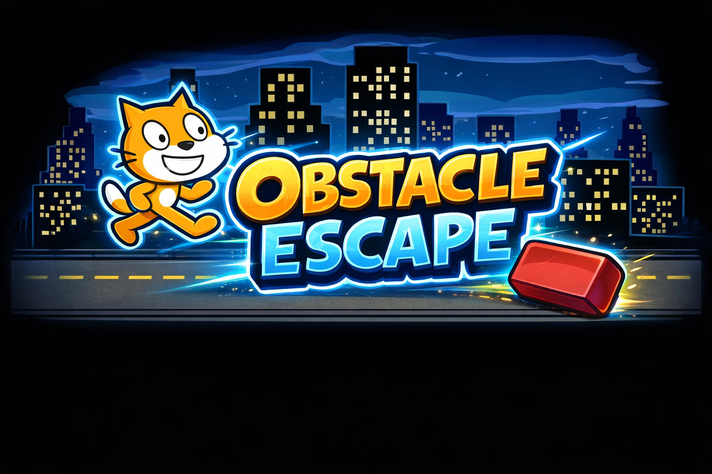
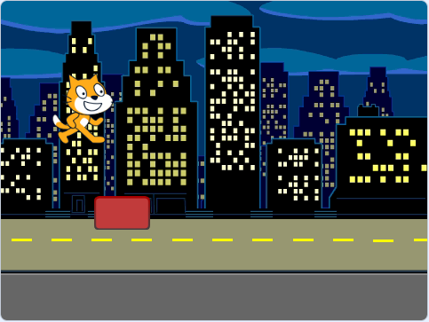
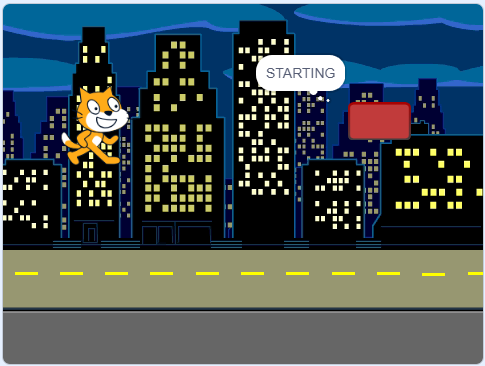
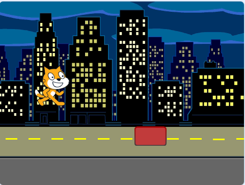
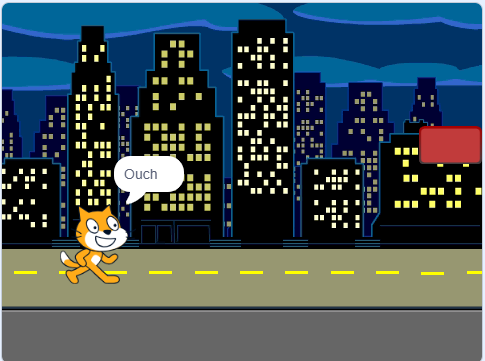

A fast-paced obstacle avoidance game where the player controls a drone, dodges hazards, and tries to survive as long as possible.
Obstacle Escape is a mobile-style survival game where the player controls a drone and avoids obstacles for as long as possible. The game focuses on quick reactions, smooth movement, and a simple gameplay loop that is easy to understand.
The goal is to stay alive, avoid collisions, and improve your survival time with each attempt. The project demonstrates movement, obstacle timing, collision detection, player feedback, and basic game polish.
This game is currently presented as a class project prototype. It was designed with the idea of mobile-style play, but it is currently being showcased through a web-based project page.
A future version could be published as a mobile game or browser-based game.




Game Concept: A simple obstacle avoidance survival game where the player pilots a drone through hazards and tries to survive as long as possible.
Target Audience: Casual players who enjoy quick, simple, replayable games.
Monetization Strategy: A future version could use optional ads, cosmetic upgrades, or a free browser version with expanded paid content.
Marketing Strategy: The game could be promoted through a portfolio site, classroom showcase, social media clips, and game-hosting platforms.
Cameron Sanchez contributed as the Game Artist / Visual Designer for Team 1. This included creating and organizing visual assets, helping define the shared website style, preparing screenshots, and building the presentation page for Obstacle Escape.